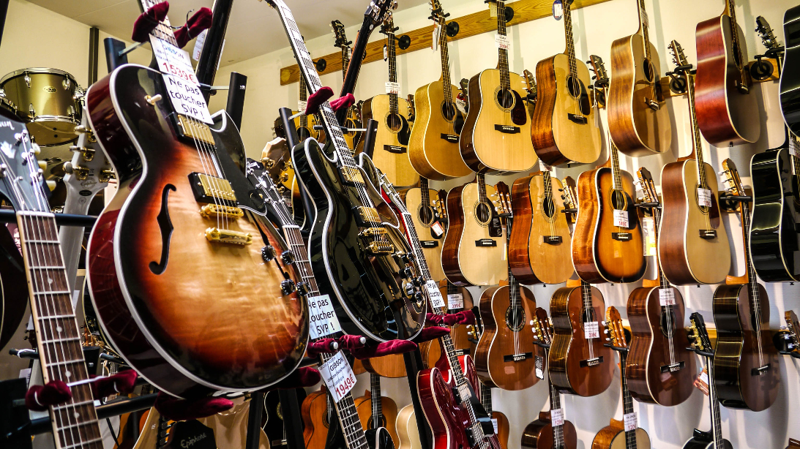
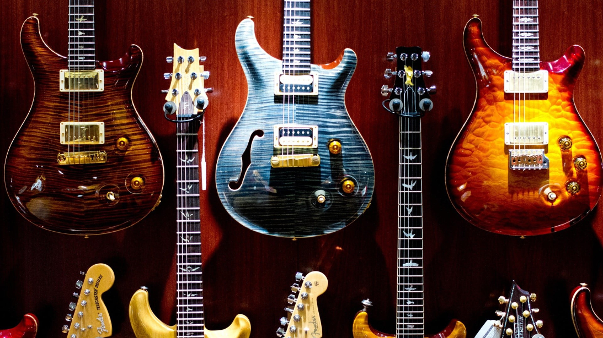
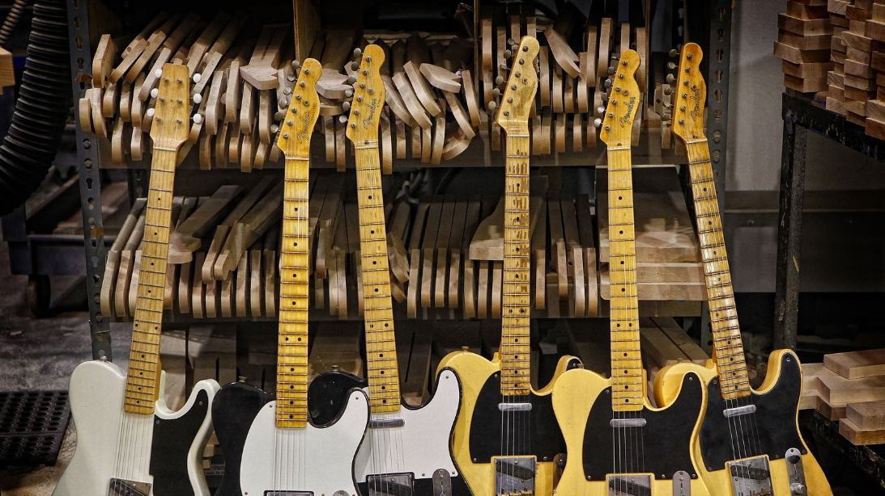
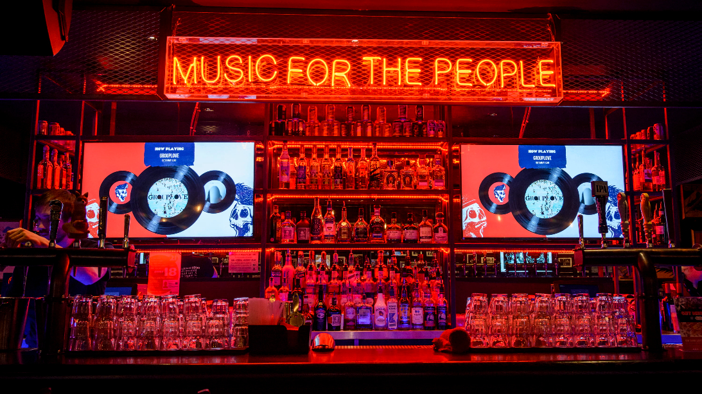
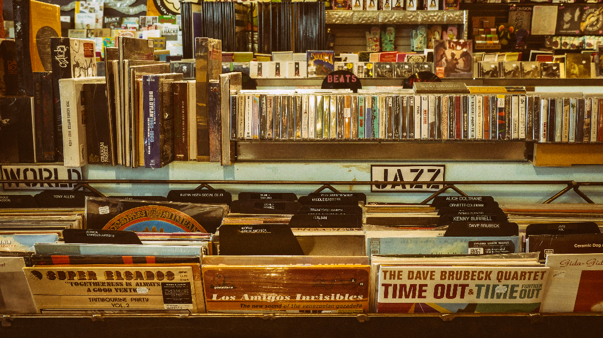
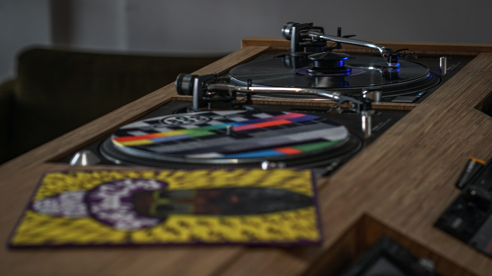
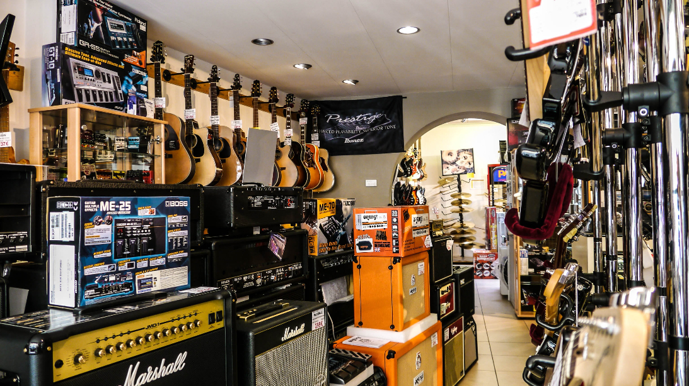
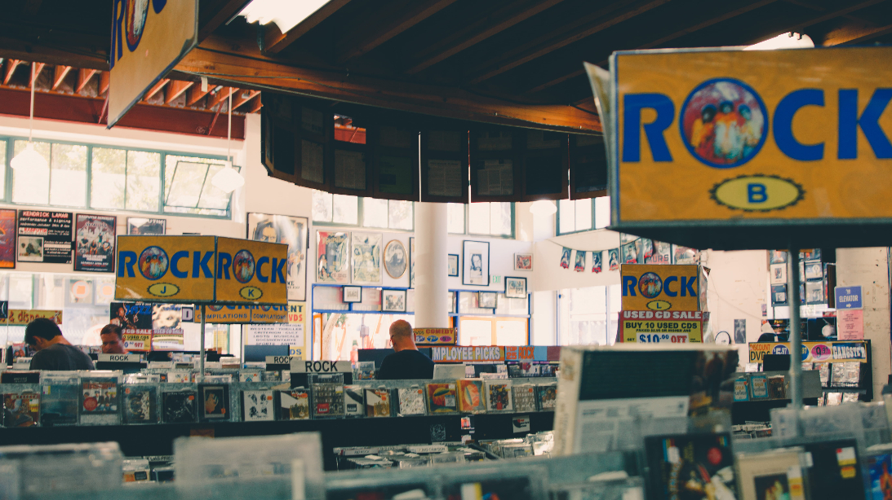

What is the importance of music in our life? Art and music are basic human functions. Humankind and art cannot function without one another. We have the burning desire to create, whatever it may be and however tiny or grand. The interaction with sound is unavoidable, either to make it or take pleasure in it. People have always found music significant in their lives, whether for enjoyment in listening, the emotional response, performing, or creating. This is no different for classical music or contemporary concert music. Both musics have immense worth for our society; however, the problem we all know in this field is that this music is little known and hence underappreciated. As a musician and artist it is my responsibility that others can learn to enjoy the art for which I have utter passion.
Type of music
Classical
Country
Electronic dance music (EDM)
Hip-hop
Indie rock
Jazz
K-pop
Metal
Oldies
Pop
Rap
Rhythm & blues (R&B)
Rock
Some Famous Music In The World
Gangnam style
Despacito
Shape of you
See You Again
Uptown Funk
Images of Music store








Video on Music store
Specialized stores:
In the 2010s, general music stores have had to face competition from online music stores, which offer a huge selection of instruments and equipment.
1. Electric guitars:
Electric guitars started appearing in the 1930s. Mainstream electric guitars stores sell well-known brands like Gibson, Fender and Ibanez. Most guitar stores sell six-string models, bass guitars, left handed guitars and electric guitar packages for beginners, which typically include a budget-priced electric guitar, a small practice amplifier, a strap and picks.
Guitar World magazine states that since guitar stores require patrons to try out guitars and amplifiers in the premises, some guitar players are nervous about playing in front of the store staff and other patrons. A University Press of Kentucky book on women in music states that customers did not treat a woman who worked at a guitar store like she knew anything about guitars until she would use special guitar terms.
2. Acoustic guitars:
Acoustic guitar sections are one of the main areas in many music stores. Some stores create a separate area with a door, both to create a quieter area for customers to play the instruments and to enable humidifiers to be used. Famous acoustic guitars include C. F. Martin & Company, Taylor Guitars, Fender, Gibson, Guild, Washburn and Lowden Guitars.
3. Piano:
The H.S. Schultz Piano Store in 1905.
One common specialty store is the piano store, which typically sells a range of upright pianos and grand pianos. In the 2010s, some piano stores sell high-end digital pianos, including grand pianos equipped with a digital player piano mechanism that can play back a recorded performance by activating the hammers. Piano sales are on the decline, in part because high-quality, properly-maintained pianos can remain playable for 60 to 80 years after their original purchase. Some piano stores offer rental of new pianos; as well, some piano stores sell used pianos.[better source needed]
The high price of pianos is one factor that is causing the closing of piano stores: "A good grand piano from a respected name costs about as much as a luxury automobile", and as such, children (and their parents) are choosing less expensive instruments, such as electronic keyboards or stringed instruments.
Though sales of acoustic pianos and quality keyboard instruments continually declines in the United States, in China "piano sales are booming", with most instruments being intended for home use. This rise in sales is in part because the costly instruments are viewed as a status symbol in China.
4. Violin family:
Violin shop in White Plains, New York
Another specialty shop is the "violin shop", which, despite its name, often sells various violin family instruments (violin, viola, cello and often double bass, and the bows, strings, rosin, chinrests, and other accessories used with these instruments). Violin shops are often operated by luthiers (violinmakers) who make violin family instruments and bows for sale. Luthiers also do maintenance and repairs on violin family instruments and bows.
5. Sheet music:
Sheet music stores sell printed classical music for songs, instrumental solo pieces, chamber music, and scores for major symphonies and choral works, along with instrumental method books, "etudes" (studies) and graded musical exercises. Many sheet music stores also carry printed music songs for popular music genres such as rock, pop and musical theatre including individual songs and collections of songs grouped by artist, musical, or genre. Music for guitarists or electric bass players may be in tabulature notation, which depicts where on the instrument the performer should play a line. In the 2010s, sheet music stores often sell legal, copyright-compliant jazz fake books. Sheet music stores often carry some practice accessories, such as metronomes, music stands and tuning forks.
6. Organ stores:
Prior to the widespread availability of lightweight electronic clonewheel organs in the 1980s and 1990s that emulate the sound of a heavy, electromechanical Hammond organ, many cities had organ stores which sold large electric and electronic theatre organs and spinet organs made by Hammond, Lowrey and other manufacturers. These organs were sold for use in private homes and in churches; electric and electronic organs were popular for churches, because they cost significantly less than a pipe organ.
7. Pro audio:
Main article: Professional audio store
Pro audio stores sell and in many cases, rent sound reinforcement system components, PA systems, microphones and other audio gear. Some stores also rent "backline" musical gear, such as stage pianos and bass amps.
What is music store?
A music store or musical instrument store is a retail business that sells musical instruments and related equipment and accessories. Some music stores provide additional services for a fee, such as music lessons, instrument or equipment rental, or repair services.